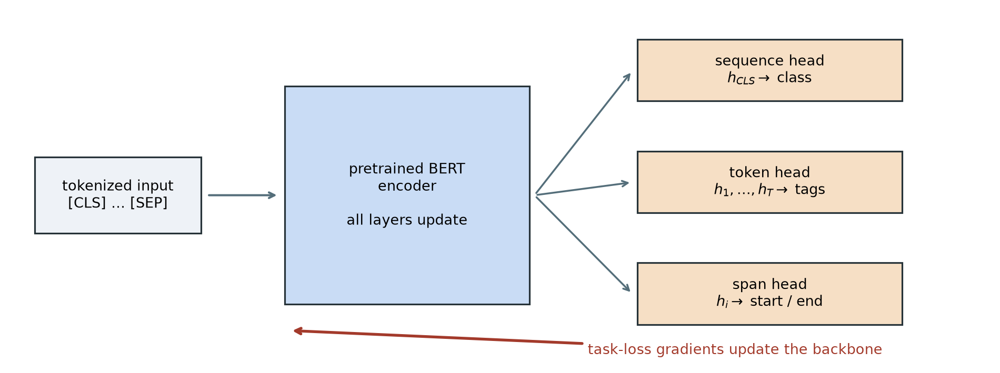

Chapter 9 left a decision rule unfinished. Transfer should pay when labels are scarce, the target is feature-hungry, and source coverage is useful at a matched scale. Images supplied a natural source task—learn visual features from many labeled photographs, then adapt them. What should play the same role for language, where task labels are expensive but raw text is everywhere?
Text can write its own questions. Hide bank in “the boat reached the bank,” and the surrounding words contain the answer. Hide the same spelling in “the bank approved the loan,” and a different neighborhood supplies a different answer. No person had to label either sense. The answer is already inside the sequence; corruption turns it into a question.
That move depends on the seed from Chapter 14: visibility is a modeling decision. A next-token model used a causal triangle because looking right would reveal its target. A representation model can instead let every nonpadding token consult both sides—provided selected targets are treated so copying cannot solve the whole task. This chapter separates those controls, derives masked language modeling (MLM), and shows how pretraining changed the default workflow from “initialize and train” to “pretrain, then adapt.”
15.1 Separate controls, not one mask
Bidirectional Encoder Representations from Transformers—BERT—uses a few special tokens. [CLS] is a learned summary placeholder, [SEP] marks a boundary, and [PAD] fills unused batch slots. Consider six positions:
Figure 15.1: Visibility and supervision are separate controls. A causal decoder sees a lower triangle (left); BERT-style attention sees every nonpadding key (center). The MLM selector marks one selected target position (right).
The center matrix contains no future-blocking triangle. Every nonpadding query can route from every nonpadding key—including itself. That is what bidirectional means here: a token’s representation can jointly use left and right context in every layer. It does not mean running two separate recurrent networks, and it does not define a left-to-right probability for the whole sentence.
Only padding keys are blocked in the drawing. A [PAD] query row can still produce an output, but downstream computation ignores that row; the important guarantee is that real queries cannot retrieve padding as information.
Every ordinary token may attend to [MASK], because [MASK] is an input token—not an attention prohibition. Only the selector says that position 2 contributes MLM loss. The padding mask separately blocks the final slot as a key. Reusing mask for visibility, selection, corruption, and padding is convenient shorthand—and a reliable source of bugs.
WarningThe copy trap
If full attention received the original token at every selected position, the model could copy answers through the residual stream. BERT’s policy corrupts 90% of selected sites, so copying cannot solve the whole task; the deliberate 10% unchanged branch has a separate purpose below. Conversely, replacing a token by [MASK] does not make it invisible—its neighbors still see the placeholder and one another. Always audit visibility, selection, corruption, and padding separately.
15.2 Text supplies supervision
In ordinary supervised learning, an external label \(y\) accompanies input \(x\). Masked language modeling derives both from one unlabeled sequence: the corrupted sequence is the input, and the original selected tokens are the targets. This is self-supervised learning—the supervision is constructed from the data rather than supplied by a human annotator.
NoteSelf-supervised does not mean target-free
The method still has labels and a loss. What changes is their origin. The clean text supplies a target for every selected position, so a large corpus can create many training examples without a task-specific annotation campaign.
This idea was part of a broader 2018 convergence, not a solitary invention.
Work
Pretraining signal
What moved downstream
ELMo
Forward and backward LSTM language models
Fixed contextual features
ULMFiT
Causal language modeling
The entire adapted language model
GPT
Causal Transformer language modeling
A pretrained Transformer plus task head
BERT
Masked tokens in full context, plus NSP
A deeply bidirectional Transformer encoder plus task head
ELMo demonstrated that a word’s useful vector should depend on its sentence. ULMFiT supplied a robust recipe for adapting a pretrained language model rather than freezing it. GPT paired Transformer pretraining with supervised fine-tuning. BERT’s decisive change was to pretrain every encoder layer with joint left-and-right context. The workflow mattered as much as the architecture: learn broadly from raw text first, then spend scarce labels on adaptation.
15.3 The masked-language-model objective
Let us pin the idea to shapes before writing code. Let a tokenized sequence be
where \(T\) is sequence length and \(V\) is the vocabulary. Choose a random set \(M\) of eligible positions, then apply a corruption operator \(c\) to obtain \(\widetilde{x}=c(x,M)\). A bidirectional encoder with parameters \(\theta\) produces
The condition is \(\widetilde{x}\), the one jointly corrupted sequence—not a different clean sequence with only \(x_i\) removed for every term. With batches, token IDs have shape \((B,T)\), hidden states \((B,T,d)\), and dense vocabulary logits \((B,T,|V|)\). Boolean selection gathers \(|M|\) rows, so cross-entropy receives selected logits \((|M|,|V|)\) and targets \((|M|,)\). Unselected positions can affect the representations but contribute no direct MLM loss.
Fifteen percent, then 80/10/10
Original BERT selects 15% of eligible tokens. Conditional on selection:
80% are replaced by [MASK];
10% are replaced by a random vocabulary token;
10% remain unchanged.
For 1,000 eligible positions, the expected flow is therefore
All 150 selected positions are scored against their original token. The 120 mask replacements are 12% of all eligible positions, not the complete supervision rate. Random ordinary-looking replacements force the encoder to cross-check a token against its context rather than trusting the visible identity. The unchanged branch prevents the opposite shortcut—the assumption that every selected ordinary-looking token must be wrong. It also reduces the mismatch between pretraining, where [MASK] exists, and downstream inputs, where it ordinarily does not. An unchanged selected token exposes its answer on purpose; only about 1.5% of all eligible positions follow that branch, and the encoder is not told which normal-looking tokens were selected.
Figure code: trace the two-stage MLM selection policy
Figure 15.2: BERT’s 80/10/10 policy is conditional on the selected 15%. All three branches retain the original token as the prediction target.
direct loss targets: 150
[MASK] share of all eligible positions: 12.0%
Original BERT pre-generated several masked versions of its training examples; RoBERTa later redrew masks as examples were presented. Our controlled lab uses the latter dynamic corruption choice—the same sentence can ask different questions on later passes. Reproducibility therefore requires a separate random generator. Seeding model initialization while leaving the corruption stream implicit is not an exact experiment.
TipAudit the selector before the loss
Print the number of eligible and selected positions, verify that special and padding tokens are excluded, and inspect the realized 80/10/10 proportions over many batches. Then assert that the selected logit and target shapes agree. A loss can decrease while a selector silently trains on padding or on the wrong tokens.
15.4 From a Transformer encoder to BERT
The original BERT input at position \(i\) adds three learned vectors:
The token comes from a WordPiece vocabulary: frequent character sequences are stored whole, while rarer words can be assembled from reusable subword pieces.
TipPractice bridge (non-examinable): make the vocabulary learnable
Chapter 10 fixed its vocabulary at individual characters (Chapter 10). A full-word vocabulary shortens sequences but gives every rare spelling its own entry. Subword tokenization chooses a middle contract. Byte Pair Encoding (BPE) begins with small symbols, counts adjacent pairs in the training corpus, merges the most frequent pair, and repeats until it reaches a chosen vocabulary budget.
This original toy implementation starts from characters plus an end-of-word marker. Corpus frequencies weight the pair counts; lexicographic order breaks exact ties so the result is reproducible.
Code: learn five subword merges from weighted word counts
from collections import Counterdef merge_pair( symbols: tuple[str, ...], pair: tuple[str, str]) ->tuple[str, ...]: merged: list[str] = [] index =0while index <len(symbols):if index +1<len(symbols) and symbols[index:index +2] == pair: merged.append("".join(pair)) index +=2else: merged.append(symbols[index]) index +=1returntuple(merged)corpus = {"low": 5, "lower": 2, "newest": 6, "widest": 3}words = {tuple(word) + ("</w>",): count for word, count in corpus.items()}merges: list[tuple[tuple[str, str], int]] = []for _ inrange(5): counts: Counter[tuple[str, str]] = Counter()for symbols, frequency in words.items():for pair inzip(symbols, symbols[1:]): counts[pair] += frequency maximum =max(counts.values()) best =min(pair for pair, count in counts.items() if count == maximum) merges.append((best, maximum)) words = {merge_pair(symbols, best): count for symbols, count in words.items()}print("merges:", [("+".join(pair), count) for pair, count in merges])print("lower:", " | ".join(next(word for word in words if"r"in word)))
merges: [('e+s', 9), ('es+t', 9), ('est+</w>', 9), ('l+o', 7), ('lo+w', 7)]
lower: low | e | r | </w>
NoteReading the learned pieces (non-examinable)
The first three merges build est</w> from nine weighted occurrences; the next two build low from seven. The word lower is therefore represented as low | e | r | </w> even though the whole word was never granted its own token. This is the mechanism, not BERT’s tokenizer: WordPiece uses a different merge-scoring criterion, and practical byte-level tokenizers begin from bytes rather than the toy character alphabet. The shared idea is the important one: the vocabulary becomes a learned compromise between sequence length and reusable coverage.
Learned absolute position embeddings replace Chapter 14’s fixed sinusoidal table. Segment A/B embeddings mark which of two packed text spans supplied a token; they do not block cross-segment attention. [CLS] begins the sequence, and [SEP] ends each span:
The resulting sequence passes through a stack of full-context Transformer encoder blocks. Original BERT uses the post-LayerNorm order introduced as the historical Transformer in Chapter 14. Its two published sizes were:
Model
Blocks \(L\)
Width \(d\)
Heads
Parameters
BERT Base
12
768
12
about 110 million
BERT Large
24
1,024
16
about 340 million
Pretraining used BooksCorpus and English Wikipedia—about 3.3 billion words in the paper’s accounting. The scale is historically important—but the reusable idea is the separation of stages:
Original BERT combined MLM with next sentence prediction (NSP). Half the training pairs used the actual following segment and half used a random segment; the [CLS] state predicted which kind it saw—its direct pretraining assignment. MLM alone gives [CLS] no token-reconstruction target, although information can still route through it. Later recipes such as RoBERTa showed that strong BERT-style training did not require NSP in their settings. That is a recipe result, not proof that a sentence-relation objective can never help. This chapter studies the MLM half because it supplies the cleanest bridge from visibility to representation learning.
[CLS] is a learned meeting place
[CLS] is an ordinary learned token with an unusual assignment: place it first, allow it to attend through every layer, then give its final hidden state to a sequence-level head. For \(K\) classes,
For token labeling, apply a head to every \(h_i\). For extractive question answering, score candidate start and end positions. The encoder interface stays the same while the small task head changes.
[CLS] is not born with sentence meaning. Pretraining and downstream gradients teach it what information to gather. Chapter 16 will reuse this learned-summary pattern after replacing words by image patches.
15.5 Fine-tuning means the backbone moves
Let \(\theta_0\) denote pretrained encoder weights and \(\phi\) a newly initialized task head. Standard BERT fine-tuning solves
starting at \(\theta=\theta_0\). Gradients update both \(\theta\) and \(\phi\). Freezing \(\theta_0\) and training only \(\phi\) is a useful linear probe or feature probe, but it is not the standard fine-tuning procedure. This distinction matters when the task needs the representation itself to move.

Figure 15.3: One pretrained encoder supports several task interfaces. In standard fine-tuning, task-loss gradients pass through the new head and continue through the encoder; stopping them at the head would make the run a frozen probe.
Fine-tuning also creates experimental obligations. The scratch and pretrained arms must share labeled examples, head initialization, minibatch order, update count, evaluation, and downstream hyperparameters. The pretrained arm has already received extra unlabeled-data compute, so the comparison estimates the value of pretraining—not a total-compute advantage.
15.6 A controlled transfer lab
Chapter 9’s three gates are easy to repeat and surprisingly hard to test. A first pre-test asked a tiny encoder to distinguish true continuations in this book from distant splices. The five-seed MLM gain was small, faded as labels increased, and lost decisively to a weighted lexical-overlap baseline. We rejected that task as the chapter’s affirmative experiment—the shallow baseline solved more of the problem than the representation story did.
The replacement lab is synthetic by design. It removes spelling, frequency, and downstream-context shortcuts so that source coverage is a controllable variable.
Build a latent regularity
Eighty randomly generated four-letter token strings are divided into two latent families. Family assignment is independent of spelling. Forty covered strings—20 per family—each appear eight times in an unlabeled MLM corpus. Forty more—20 per family—live in the input vocabulary but are withheld from MLM input sequences, random replacements, and prediction targets.
Each covered word receives eight source sentences. Six contain cues from its own family; two deliberately contain cues from the other family. One family appears near words such as rain, soil, roots, and garden; the other appears near power, metal, gears, and workshop. The 25% cue noise gives every covered string a mixture of supporting and opposing contexts—the aggregate family signal is statistical rather than pure.
The downstream input is always the neutral, previously unseen template
\[
\text{“we found the PSEUDOWORD today.”}
\]
No family cue remains. A classifier reads the generated token’s hidden state and receives only 1, 2, or 4 labeled word types from each family. Evaluation uses the remaining covered types, never the labeled types. The 40 uncovered controls use the same neutral sentence. Source and target use the same atomic token granularity and similarly short sequences, making “matched scale” explicit rather than assuming it from a shared domain.
Code: construct the controlled source and target distributions
SEED =6050WIDTH =48HEADS =4FF_WIDTH =96BLOCKS =2MAX_LEN =10PRETRAIN_STEPS =600BATCH_SIZE =64LABEL_COUNTS = (1, 2, 4)REPLICATE_SEEDS =tuple(range(6050, 6055))torch.set_num_threads(4)torch.use_deterministic_algorithms(True)forms = ["".join(letters)for letters in itertools.product("bglmprstvz", "aeiou", "dknrst", "aeiou")]form_order = torch.randperm(len(forms), generator=torch.Generator().manual_seed(SEED))[:80]token_strings = [forms[index] for index in form_order]family_words = [token_strings[:40], token_strings[40:]]covered_words = [words[:20] for words in family_words]uncovered_words = [words[20:40] for words in family_words]context_pairs = [ ("rain", "power"), ("soil", "metal"), ("roots", "gears"), ("water", "fuel"), ("garden", "workshop"), ("grows", "moves"), ("blooms", "turns"), ("sunlight", "current"),]def source_sentences(word: str, family: int) ->list[list[str]]: cue = [pair[family] for pair in context_pairs] other = [pair[1- family] for pair in context_pairs]return [ ["after", cue[0], "the", word, cue[5]], ["the", word, "needs", cue[3], "near", cue[1]], [cue[2], "support", "the", word], ["in", "the", cue[4], "the", word, cue[6]], ["we", "found", "the", word, "beside", cue[1]], [cue[0], "and", cue[7], "help", "the", word], ["the", word, "rests", "near", other[4]], ["today", "the", word, "follows", other[2]], ]sentences: list[list[str]] = []for family, words inenumerate(covered_words):for word in words: sentences.extend(source_sentences(word, family))specials = ["[PAD]", "[UNK]", "[CLS]", "[SEP]", "[MASK]"]ordinary =sorted( {token for sentence in sentences for token in sentence} |set(token_strings))vocabulary = specials + [token for token in ordinary if token notin specials]stoi = {token: index for index, token inenumerate(vocabulary)}PAD, UNK, CLS, SEP, MASK = [stoi[token] for token in specials]def encode(sentence: list[str]) -> torch.Tensor: ids = [CLS] + [stoi.get(token, UNK) for token in sentence] + [SEP] ids += [PAD] * (MAX_LEN -len(ids))return torch.tensor(ids[:MAX_LEN])source_ids = torch.stack([encode(sentence) for sentence in sentences])uncovered_ids = torch.tensor([ stoi[word] for family in uncovered_words for word in family])source_token_ids = torch.unique(source_ids)random_pool = source_token_ids[~torch.isin(source_token_ids, torch.tensor([PAD, CLS, SEP]))]assertlen(sentences) ==320assertlen(vocabulary) ==115assertnot torch.isin(source_ids, uncovered_ids).any()print(f"source: {len(sentences)} sentences; vocabulary: {len(vocabulary)} tokens")print(f"covered/uncovered token strings: 40 / {len(uncovered_ids)}")
This is an atomic word-level vocabulary, not WordPiece. That simplification is intentional—splitting the generated strings into subwords could let spelling leak family identity. The source generator—not natural language—defines the latent regularity, so the experiment can demonstrate a mechanism but cannot estimate real-world BERT performance.
A small BERT-style encoder
The encoder has two post-LayerNorm blocks, width 48, four heads, learned absolute positions, full nonpadding attention, and GELU feed-forward layers. Here \(\operatorname{GELU}(x)=x\Phi(x)\), with \(\Phi\) the standard-normal cumulative distribution—a smooth, input-dependent gate used by original BERT. The lab omits segment embeddings, NSP, and dropout. Its 43,920 encoder parameters make the study fast enough to repeat end to end, while preserving the relevant path from bidirectional attention to MLM to fine-tuning.
Code: define full attention, the encoder, and the MLM head
The MLM decoder is deliberately untied from the input embedding table. The original released BERT code explicitly tied those weights, but tying would update an uncovered input row through the vocabulary softmax even when that token never appeared. The custom control is stricter—random replacements are drawn only from source tokens, and the code later asserts that every uncovered input embedding remains bitwise unchanged through pretraining. Untied decoder rows for the controls still participate as negative softmax classes, but they are discarded downstream and never expose a control token’s context or identity to the encoder input.
Pretrain, then adapt
For each seed from 6050 through 6054, one encoder is saved before training and the same encoder receives 600 MLM updates. The two downstream arms then receive the same labeled word types, identical classifier-head tensors, 160 full-batch updates, and the same learning rates. All encoder weights move in both arms. Each seed therefore repeats initialization, corruption, MLM, label selection, and fine-tuning—not merely the last classifier fit.
Code: pretrain five paired encoders and fine-tune all weights
Across 1,032,096 eligible positions, the five runs select 155,019—15.020%. The realized branches are 80.04% mask, 9.98% random, and 9.99% unchanged. Both scratch and pretrained models reach 100% on their tiny labeled training sets in every run; failure to fit the labels therefore does not explain the scratch result.
What transferred?
Remember the question: did pretraining organize covered representations in a way that scarce labels could reuse—or did the classifier merely learn the tiny label set? The task, control, and geometry answer different parts.
Figure code: audit paired transfer, source coverage, and representation geometry
Figure 15.4: Five paired end-to-end seeds in the synthetic transfer lab. MLM initialization separates covered latent families and improves every covered-type comparison (left and center); both arms stay near chance on input-vocabulary controls withheld from MLM inputs, replacements, and targets (left). Centered cosine similarity is a representation diagnostic, not a task metric (right).
initial within/between: (-0.03466804325580597, -0.0160280279815197)
after MLM within/between: (0.5322557687759399, -0.5517237186431885)
Labels / family
Scratch, covered
MLM, covered
Gain
Scratch, unexposed
MLM, unexposed
1
0.468
0.995
+0.526
0.475
0.425
2
0.489
1.000
+0.511
0.500
0.440
4
0.494
1.000
+0.506
0.550
0.430
MLM initialization wins all 15 paired covered-type comparisons. At two labels per family, for example, mean covered accuracy moves from 0.489 to 1.000. On the 40 unexposed controls, scratch and MLM-initialized means stay around chance at every budget. MLM therefore helps types whose source contexts contain the latent regularity—not arbitrary rows that merely exist in the input vocabulary.
The labeled sets are nested within a seed, but increasing the budget removes those additional types from that budget’s test pool. The within-budget scratch-versus-MLM comparison is exact; movement across budgets is not a controlled learning curve.
The representation diagnostic agrees with the task result. In seed 6050, mean centered cosine similarity starts at \(-0.0347\) within a family and \(-0.0160\) between families—no useful separation. After MLM, it is \(0.5323\) within and \(-0.5517\) between. Centered cosine first subtracts the mean representation, then unit-normalizes each vector and takes a dot product: positive values point in similar residual directions, negative values in opposing directions. Pretraining has organized neutral-context token states around the latent source regularity, and a few labels recover that organization for unseen covered types.
This closes Chapter 9’s contract at toy scale:
Labels are scarce: the task supplies only 2, 4, or 8 labeled words total.
The target is representation-hungry: spelling, frequency, and task-context cues are neutralized; the label must transfer through the token representation.
Source coverage is useful at a matched scale: source and target use atomic tokens and similarly short sequences; covered strings transfer, while balanced vocabulary residents withheld from MLM inputs, replacements, and targets remain near chance in both arms.
The result is an existence proof for a mechanism. A co-occurrence method could also recover the synthetic families; the experiment does not establish Transformer superiority. The limits are concrete—the data generator builds the regularity, the pretrained arm receives extra compute, and five toy seeds do not estimate natural-language performance. The justified conclusion is narrower: in this controlled construction, MLM organizes covered token representations around a latent regularity, and a few labels recover it for unseen covered types.
15.7 Three pretraining families
Pretraining is a regime, not an architecture. The visibility rule and pretraining objective determine what a model can learn—and how it will later be used.
Table 15.1: Three pretraining families separate visibility, objective, and characteristic use.
Family
Visibility during pretraining
Objective
Characteristic use
BERT-style encoder
Full nonpadding context
Predict selected original tokens after 80/10/10 treatment
Contextual representations and task heads
GPT-style decoder
Causal prefix
Predict the next token
Autoregressive generation and adaptation
T5-style encoder–decoder
Full encoder; causal decoder with cross-attention
Generate removed spans separated by sentinel tokens
Text-to-text conditional generation
The separation in Table 15.1 matters during execution too. A GPT-style decoder can train all next-token positions in parallel under teacher forcing because the causal mask exposes only each prefix. Generation is still sequential: the model must emit a token before that token can join the next prefix. Training and inference share a factorization and visibility rule, not an execution schedule.
Once those next-token logits exist, Chapter 11’s greedy and beam-search machinery can rank continuations—the architecture changes, but decoding remains a separate decision layer. Chapter 17 will return to how prompts alter the context supplied to that decoder.
T5 turns tasks into text-to-text problems and marks removed spans with learned sentinel tokens. Its encoder produces a sequence of memory states under full visibility; its causal decoder cross-attends to that sequence while generating the target. It does not squeeze the input into one fixed bottleneck vector. These families trade representation, generation, and input–output structure differently—they are not a ranking from old to new.
15.8 What changed after 2018
Before the pretrained era, a new labeled dataset often implied a new model trained from a random initialization. After BERT and its contemporaries, the default question changed: which pretrained model, which adaptation, and which data interface fit the task?
Three consequences follow.
Optimization starts elsewhere. The downstream run begins in a parameter region already shaped by a broad source objective. The task is not asking a few labels to invent syntax and semantics from scratch.
Data work moves upstream. Corpus choice, tokenization, corruption, and source coverage become part of model design. Pretraining is curriculum at dataset scale.
One backbone serves many interfaces. A sequence head, token head, or span head can reuse the same encoder. That modularity makes comparison easier—but also makes pretraining assumptions easy to inherit without inspecting them.
The regime introduces new failure modes. Source bias can transfer with useful features. A vocabulary can represent a token without supplying useful exposure. Full fine-tuning can forget source behavior or become too expensive as the backbone grows. Those are not footnotes to transfer; they are the agenda of the pretrained era.
The chapter closes with three forward seeds. A learned summary token can gather a sequence for a downstream head; Chapter 16 will give that same pattern a sequence of image patches. Pretraining is a regime, not an architecture; Chapter 16 will ask what changes when an encoder leaves text for images and scaling takes center stage. Fine-tuning changed every encoder weight here; Chapter 17 will ask what adaptation remains when most, or all, of those weights must stay fixed.
15.9 Okay, so — pretraining manufactures supervision
Visibility, selection, corruption, and padding are separate. BERT removes the causal triangle, selects loss targets, then applies the 80/10/10 treatment so copying cannot solve most of them. [MASK] is a token—not an attention ban.
MLM turns raw text into supervision. Select 15% of eligible positions; conditional on selection, use 80% mask, 10% random, and 10% unchanged. All selected positions predict their original tokens.
BERT is a full-context Transformer encoder. WordPiece tokens, learned token/position/segment embeddings, post-LayerNorm blocks, MLM, and historical NSP define the original recipe.
Fine-tuning updates the encoder. Training only a new head over frozen features is a probe. Standard BERT adaptation moves the pretrained backbone and task head together.
The controlled lab closes the transfer loop at toy scale. Across five full seeds, MLM initialization wins every covered-type comparison under 2–8 total labels; input-vocabulary controls withheld from MLM inputs, replacements, and targets remain near chance in both arms.
Pretraining changed the unit of work. The field moved from one random model per task toward reusable backbones and specialized adaptation. Corpus, objective, visibility, and adaptation now belong to one design decision.
(Pencil.) For [CLS] the wug is calm [SEP] [PAD] [PAD], suppose wug is selected and replaced by [MASK]. Draw Chapter 14’s causal visibility matrix and BERT’s full nonpadding visibility matrix, using queries as rows and keys as columns. Separately mark the one position that contributes MLM loss. Why may neighboring tokens attend to [MASK], and why would full visibility leak information in a next-token generator?
(Pencil.) A batch contains 2,000 eligible ordinary tokens. Under BERT’s policy, how many positions are expected to be selected, replaced by [MASK], replaced by a random token, and left unchanged? How many contribute direct MLM loss? Explain why 12% is not the supervision rate.
(Code.) For token IDs \((B,T)\), width \(d\), and vocabulary size \(|V|\), add assertions for hidden states \((B,T,d)\), dense logits \((B,T,|V|)\), selected logits \((|M|,|V|)\), and selected targets \((|M|,)\). Assert that [PAD], [CLS], and [SEP] are never selected. Show numerically that selected-only cross-entropy matches dense cross-entropy when unselected targets use ignore_index.
(Code.) Starting from the same pretrained checkpoint and split, compare a frozen encoder probe with full fine-tuning in the generated-token lab. Match head tensors, labeled types, updates, and seeds. Plot all five paired results rather than only their means. Which regime wins here, and what broader claim would outrun the experiment?
(Code and interpretation.) Reproduce paired gains for covered and control strings at all three budgets. Map the evidence to Chapter 9’s gates. Explain the unchanged-row assertion, name two unsupported conclusions, and propose one predeclared coverage test.